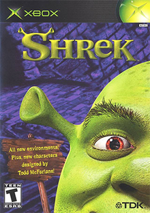
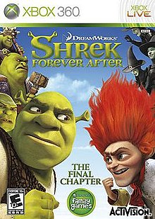

Naast de vier Films, kwam Shrek in veel andere dingen voor. Shrek kreeg meerdere theatervoorstellingen en er zijn veel verschillende games over hem gemaakt. Dit zijn een paar voorbeelden hiervan.
Shrek

Shrek is de eerste videogame die is uitgebracht over Shrek. De game kwam in 2001 uit voor de originele Xbox en de GameCube. De game speelt zich af na de eerste film. In de game moet de speler zogenaamde 'Good deeds' voltooien om verder te komen. De game werd niet erg goed ontvangen, met scores van 7/10 tot 3/10 en een gemiddelde van 5/10. veel voorkomende klachten waren de herhalende gameplay en het gebrek van geluid in delen van de game.
De game werd in totaal 1,2 miljoen keer verkocht. Een jaar later werd een verbeterde versie van de game uitgebracht genaamd: 'Shrek Extra Large'
Shrek Forever After

Shrek Forever After is een videogame gebaseerd op de fim met dezelfde naam. SFA kwam uit in 2010 voor de: Wii, Nintendo DS, PlatStation 3, Xbox 360, IOS en Windows. SFA is de laatst uitgebrachte Shrek game voor consoles, later zijn er nog een paar mobile games verschenen. In SFA speel je het verhaal van de vierde film na, en reis je door verschillende werelden als: Shrek, Fiona, Donkey en de Gelaarsde Kat.
Deze game werd, in tegenstelling tot zijn voorlopers, redelijk goed ontvangen. Met een gemiddelde score van ongeveer 7/10 is dit een van de beste Shrek games. Het is niet bekend hoe vaak deze game verkocht is, maar dat getal zit waarschijnlijk erg hoog.
Shrek The Musical
Shrek The Musical is een musical over het verhaal van de eerste film. De orginele 'Broadway' productie startte in december 2008 en einigde in januari 2010. Hierna volgde een tournee door de rest van de Verenigde Staten vanaf 2010. In Engeland werd van juni 2011 tot februari 2013 een hermaakte versie getoond met andere acteurs. De musical werd goed ontvangen en ontving meerdere prijzen, vooral voor het kostuum- en achtergrond design.